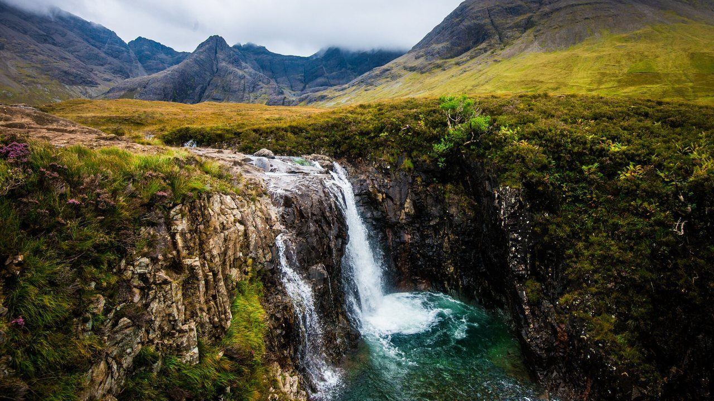

Race, Isle of Skye Fog

Behind
Best +0:01
371W
Target 418 W-47 W
- Cadence
- 87rpm
- Heart
- 140bpm
- Speed
- 26.5km/h
Recover11 of 18
3:54
Next: · 0:30 at level 24
-2.5%
139 m climbed
6.32 km
16
Resistance / 32
Solo races your best-time ghost: position reads Ahead or Behind, and solo alone gets a Pause button. Frozen at 14:36.